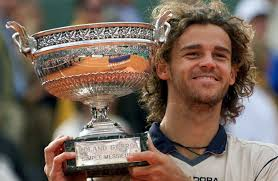
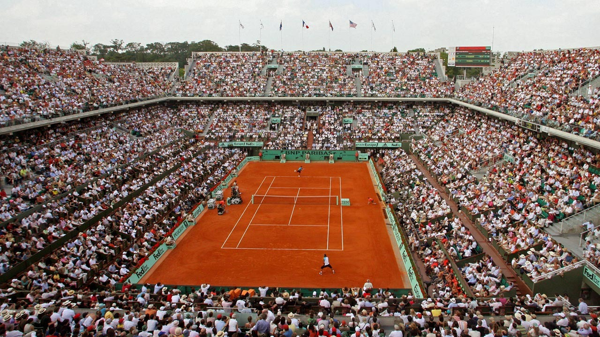
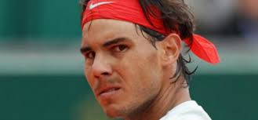

Roland Garros. News
From next week, the biggest tournament on the clay courts begins: Roland Garros. It takes place in the capital of France - Paris. This is the most unpredictable tournament of the year. It is even more surprising that over the past 12 years, this tournament was won 10 times by one person - Spaniard Rafael Nadal. But will a 31 year veteran be able to renew his stunning record? After all, younger competitors, such as the German Alexander Zverev, the Austrian Dominic Thiem or the Greek Stefanos Tsitsipas, are already on their heels. Read about the main contenders for this Trophy on the next page.
Rafael Nadal about the victory over Djokovic: "The match was good. The key was the attitude "
Seven-time champion of Rome Rafael Nadal shared his impressions of reaching his tenth final at the tournament. On Saturday, the Spaniard defeated Novak Djokovic (7: 6, 6: 3) for the 25th time in 51 games. "Of course, the match was good. Everyone decided a few points. In the first set I had an advantage, but then he spent a very good, clean game, and the game became very equal, very stubborn. I think my mood was the key. In important moments - for example, on a tie-break, - I was very aggressive from forehand. The same was in the second set. I managed to tear the rhythm of the draws, to combine high balls with blows on the line. " For his 78th title (56th soil, 32nd Masters), 31-year-old Nadal will play with the winner of the meeting of Madrid champion Sasha Zverev and Marina Cilic.
Ostapenko: I will perform with Vesnina in the doubles at Roland Garros
Russian Elena Vesnina will perform in the doubles category at Roland Garros, along with the representative of Latvia Elena Ostapenko, and not with compatriot Ekaterina Makarova. This information was confirmed by a 20-year-old native of Riga. It is assumed that Makarova will speak at the tournament paired with 19-year-old Anna Kalinskaya. "Vesnina and I will perform at Roland Garros." I was a little surprised when Lena asked me to play with her in doubles. Even more, Vesnina's request surprised me in the sense that she considers me a good pair player, "- quotes Ostapenko WTA Insider. Makarova and Vesnina won three titles in the Grand Slam tournaments, won the final WTA tournament in doubles in 2016 and won gold medals at the Olympics in Rio.